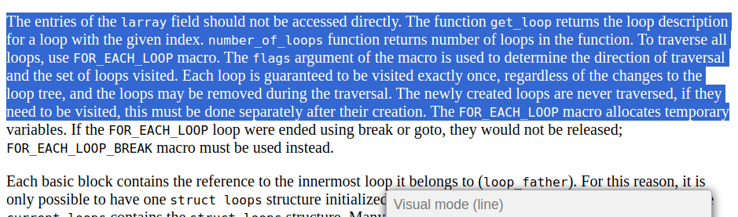

++--------------------------------------------------------------+
|+--------------------------------------------------+ |
||+---------------------------------+ | |
|||+----------------+ | | |
|||| | | | |
vvvv |N Y |N Y |N Y |
读代码 => 写代码 => 写完? --> 编译 => 正确? --> 运行 => 正确? --> 下一个功能
浏览网页时间 : 编码时间 = 9 : 1
特性
|
 |
为什么不是vim，而是neovim
bear -- compilation command
+------------------------+ +---------------+
| Editor | |Language Server|
+------------------------+ +---------------+
| Emacs | | |
| Neovim +--> | clangd |
| Visual Studio Code | | |
+------------------------+ +---------------+
更现代的CLI工具
利用shell script
# 定义函数：清空行、输出路径、复制到tmux剪贴板
# xclip依赖于图形界面，故没法使用
function _clear_line_pwd_clipboard() {
zle kill-whole-line # 清空当前行
local current_path=$(pwd) # 获取当前路径
echo $current_path # 输出路径
# 利用tmux进行复制粘贴
echo -n $current_path | tmux load-buffer
zle redisplay
}
zle -N _clear_line_pwd_clipboard
# 将上述功能绑定为CTRL + g
bindkey '^G' _clear_line_pwd_clipboard
Compilation & Assembly
bear -- make -j$(nproc)
without ccache 2:14.76 total
with ccache first time 2:42.42 total
make clean && with ccache second time 40.062 total
# Just modified several compilation unit
with mold 1.433 total
# gdb 窗口切换快捷键
$if gdb
"\C-j":"focus next\r"
"\C-k":"focus prev\r"
$endif